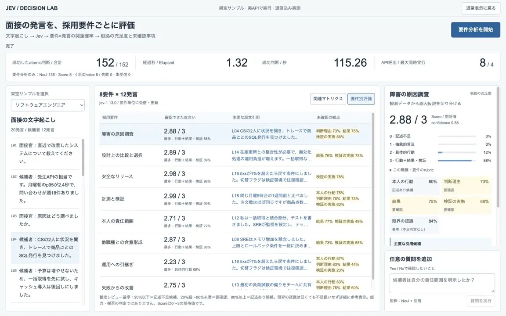
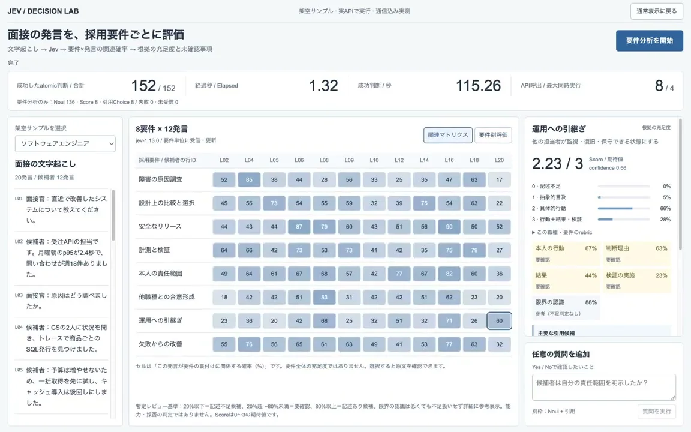

体験
結論を出す画面ではなく、根拠を整理する画面として作られている。下端に「能力・採否の判定ではありません」とあり、出力の役割を画面の中で限定している。
- 「確認できた」ことと並べて、「未確認の観点」を要件ごとに出す。足りない根拠が、次に何を聞くべきかの手がかりになる。
- マトリクスのセルには、「この発言が要件の裏付けに関係する確率」であり、要件全体の充足度ではない、という注記がある。数値の意味を、値のすぐ下で説明している。
- 充足度には「Score / 期待値」とconfidence（0.88、0.66）が添えられ、0から3の段階ごとの分布も出る。確率とconfidenceが、別の値として表示されている。
- 暫定のレビュー基準（20%以下は記述不足の候補、20%から80%未満は要確認、80%以上は記述ありの候補）が、画面に書かれている。しきい値を隠していない。
- 引用と発言は、行のID（L04など）で結ばれ、文字起こしの側でも該当の発言が強調される。ただし作者自身が、選ばれる発言にずれがあると述べている。
- 判断型の内訳と、失敗、未受信の件数を出している。何回、どの型で尋ねたかを、利用者が確かめられる。
キャプチャ
{kind=link}

（原寸の画像を開く）{kind=link}

（原寸の画像を開く）見る箇所上部の判断数・経過秒・判断型の内訳、左の文字起こし、1枚目の要件別評価（確認できた度合い、主要な原文引用、未確認の観点）、2枚目の関連マトリクスとセルの注記、右の詳細パネル、下端の暫定レビュー基準
入力から画面の変化まで
-
判断への入力
架空の面接の文字起こし（20発言、うち候補者の12発言）と、職種ごとの8つの採用要件。利用者は「要件分析を開始」を押す。Yes / Noで答えられる質問を、自分で足す欄もある。
-
Jevの判断
要件と発言の組み合わせごとの関連の確率、要件ごとの充足度、根拠として引用する発言。画面の内訳は「Noul 136・Score 8・引用Choice 8・失敗 0・未受信 0」、合計152。モデルの表記は「jev-1.13.0」。
-
結果がUIをどう変えるか
判断数は「— / 152」から「152 / 152」に変わり、経過1.32秒と表示される。要件別評価は、充足度（例：2.88 / 3）、主要な原文引用、未確認の観点を並べる。関連マトリクスは、8要件と12発言の確率を色の濃さで示す。セルや要件を選ぶと、右に段階ごとの分布、confidence、観点ごとの割合が出る。
- 判断型の見立て
- 複合出典に明記
- 画面に判断型の内訳「Noul 136・Score 8・引用Choice 8」が表示されている。
Jevとの適合
要件と発言の組み合わせという、多数の狭い判断を並列に行う使い方は、Jevに向く。152個の判断が約1.3秒で返るという作者の実測は、人が待たずに読み始められる速さである。一方、採用は人に重い影響が及ぶ領域である。1つのデモデータで動いたことは、実際の面接で使える根拠にはならない。
確認範囲と未確認事項
日本語の作者による投稿動画から静止画を確認。公開された成果物やコードは見つかっていない。作者は、デモデータを使っていること、根拠として選ばれる発言に多少のずれがあり検証を続けることを述べている。速度は作者の画面に出た実測で、こちらでは測っていない。精度、公平性、再現性、採用の判断に使えるかどうかは、確かめられていない。
- 確認済み動画から得た2枚の静止画に見える判断数と経過秒、判断型の内訳、モデルの表記、文字起こし、要件別評価、関連マトリクスとセルの注記、詳細パネルの分布とconfidence、質問を足す欄、暫定レビュー基準と「能力・採否の判定ではありません」の表記。投稿文の説明（デモデータの使用、発言のずれ、動画は等速）
- 未検証精度、公平性、再現性、根拠として選ばれる発言の正しさ、実際の面接データでの動作、速度の再測定、公開された成果物やコードの有無
- 推定扱い画面の内訳の読み方。要件と発言の関連をNoul、充足度をScore、引用する発言の選択をChoiceで尋ねている、という対応づけ
- 引用X投稿は2026-09-21（UTC）。動画から必要な範囲の静止画を切り出して引用。権利は作者に帰属する